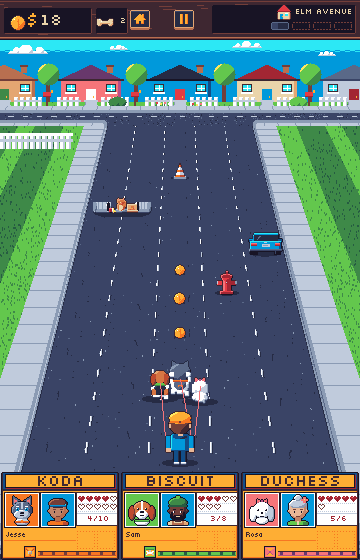
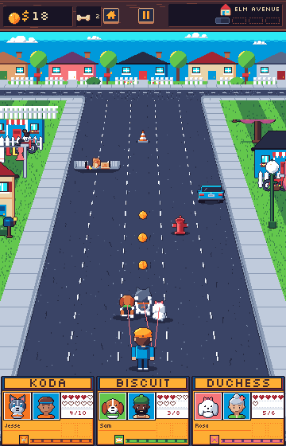
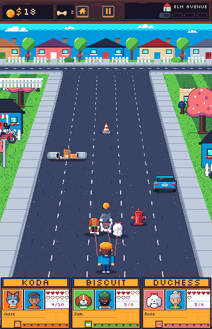
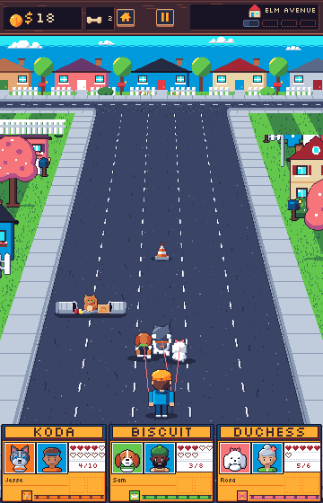
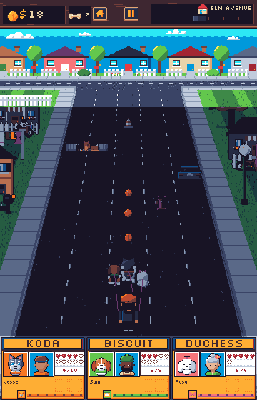
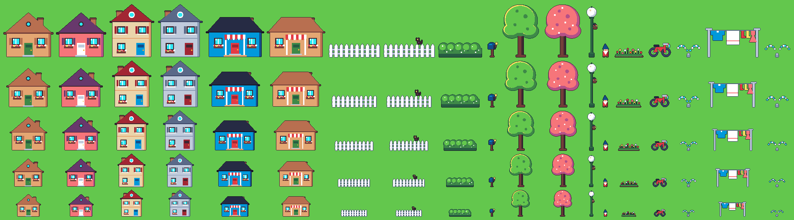

Roadside
Elm Avenue with the shipped roadside-* sprites on the 320px road's camera:
houses behind picket fences and hedges, mailboxes, street trees, lamp posts and yard
clutter, placed by the table in art/tools/roadside.py and the style guide's
Roadside section. Each prop is drawn from its exported depth step, back to front with the
road objects, under the backdrop band and the doghouses. With 20px of verge at the pack,
props rise from behind the band at the screen's sides and leave them at about 0.85 scale.
Run screen





Sprites
18 keys at full size and @88, @75, @62 and @50 (rows top to bottom); the last column is the sprinkler's second frame. In play a prop shows at 0.5 to about 0.85, so the small steps carry most of the look.
